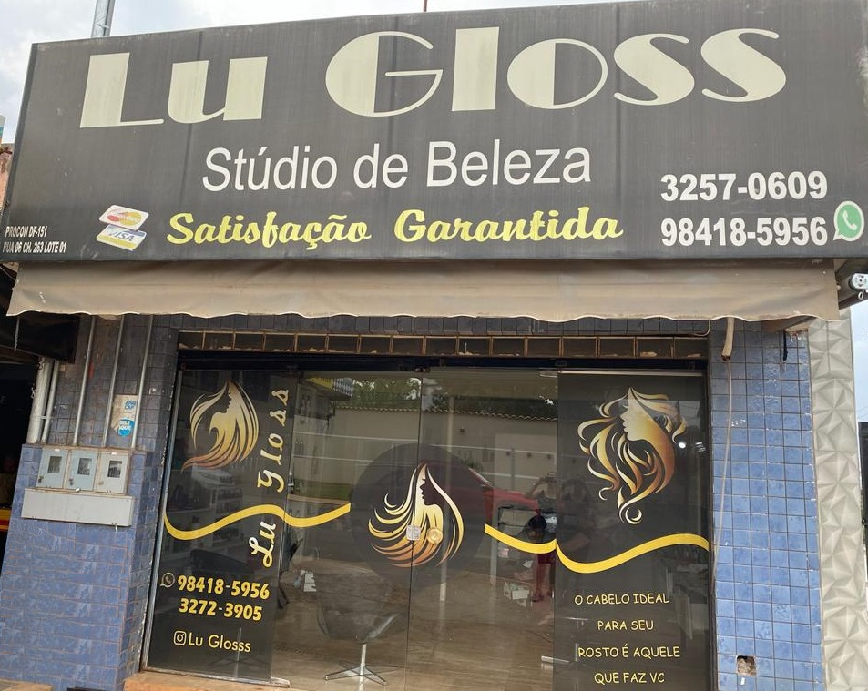

História
Inaugurado em 2010, o Lú Gloss é resultado do esforço da Hair Stylist Luzinete Azevedo. A combinação da experiência de mais de 20 anos no mercado de beleza com o olhar atento sobre a tendencia de cortes e penteado levou a idealização do Salão Lú Gloss, um espaço pensado para valorizar a beleza, a autoestima e a saúde, tanto dos cabelos como da pele. Por isso, apenas marcas que prezam por ingredientes de qualidade são utilizadas no salão.
Nossa proposta é integrar beleza, saúde dos cabelos. No Lu Gloss, utilizamos cosméticos de marcas que prezam por ingredientes de qualidade. Nossos tratamentos capilares são realizados de acordo com cada tipo de cabelo, sempre prezando pela saúde do fio e do couro cabeludo.